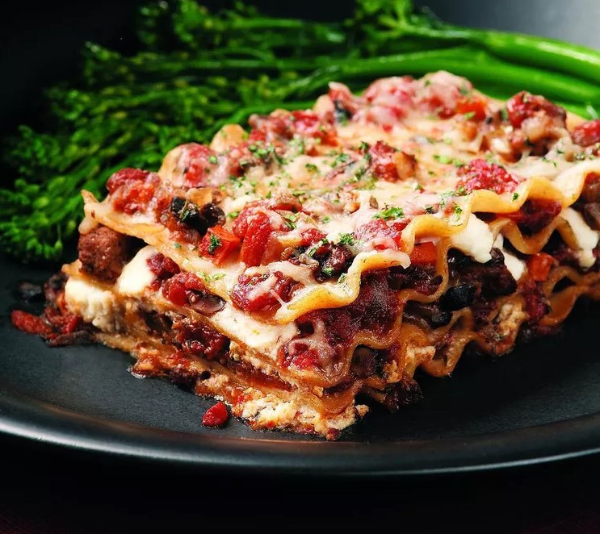

Lasagna

This lasagna recipe takes a little work, but it is so satisfying and filling that it's worth it!
Ingredients
- 1 pound (450g) ground beef
- 1 onion, finely chopped
- 3 cloves garlic, minced
- 1 can (28 ounces) crushed tomatoes
- 2 cans (6 ounces each) tomato paste
- 2 cans (15 ounces each) tomato sauce
- 2 teaspoons dried oregano
- 1 teaspoon dried basil
- 1/2 teaspoon salt (adjust to taste)
- 1/4 teaspoon black pepper
- 1/4 teaspoon red pepper flakes (optional, for a bit of heat)
- 9 lasagna noodles, cooked al dente
- 15 ounces ricotta cheese
- 1 egg, beaten
- 3 cups shredded mozzarella cheese
- 1 cup grated Parmesan cheese
- Fresh basil or parsley for garnish
Steps
- Step 1
- Step 2
- Step 3